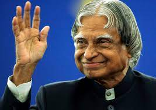

DR.A.P.J.ABDULKALAM
Early life and education

Avul Pakir Jainulabdeen Abdul Kalam was born on 15 October 1931, to a Tamil Muslim family in the pilgrimage centre of Rameswaram on Pamban Island, then in the Madras Presidency and now in the State of Tamil Nadu. His father Jainulabdeen Marakayar was a boat owner and imam of a local mosque;[9] his mother Ashiamma was a housewife.[10][11][12][13] His father owned a ferry that took Hindu pilgrims back and forth between Rameswaram and the now uninhabited Dhanushkodi.[14][15] Kalam was the youngest of four brothers and one sister in his family.[16][17][18] His ancestors had been wealthy Marakayar traders and landowners, with numerous properties and large tracts of land. Even though his ancestors had been wealthy Marakayar traders, the family had lost most of its fortunes by the 1920s and was poverty-stricken by the time Kalam was born. Marakayar are a Muslim ethnic found in coastal Tamil Nadu and Sri Lanka who claim descendance from Arab traders and local women.
Career as a scientist

After graduating from the Madras Institute of Technology in 1960, Kalam joined the Aeronautical Development Establishment of the Defence Research and Development Organisation (by Press Information Bureau, Government of India) as a scientist after becoming a member of the Defence Research & Development Service (DRDS). He started his career by designing a small hovercraft, but remained unconvinced by his choice of a job at DRDO.[26] Kalam was also part of the INCOSPAR committee working under Vikram Sarabhai, the renowned space scientist.[13] In 1969, Kalam was transferred to the Indian Space Research Organisation (ISRO) where he was the project director of India's first Satellite Launch Vehicle (SLV-III) which successfully deployed the Rohini satellite in near-earth orbit in July 1980; Kalam had first started work on an expandable rocket project independently at DRDO in 1965.[1] In 1969, Kalam received the government's approval and expanded the programme to include more engineers.
"You have to dream before your dreams can come true.
A. P. J. Abdul Kalam"